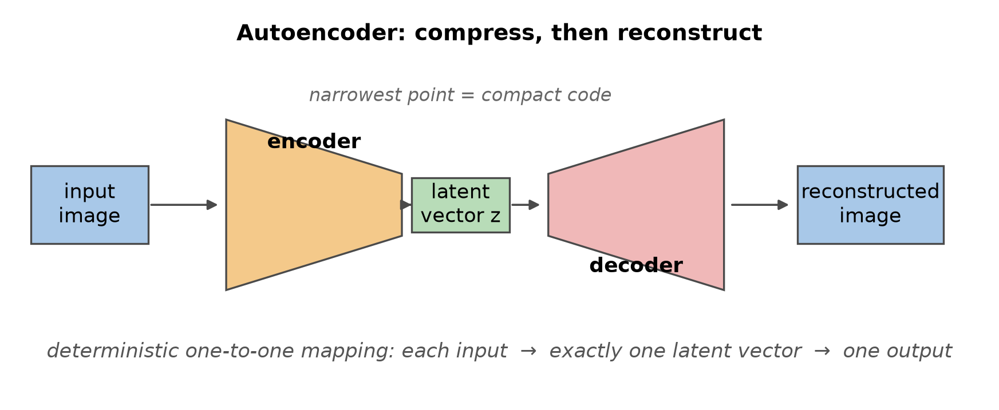
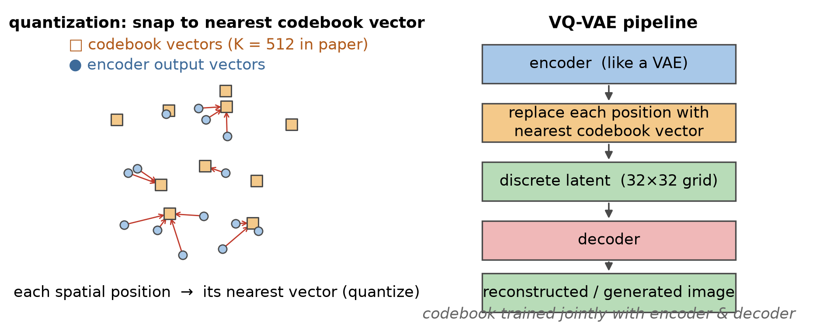
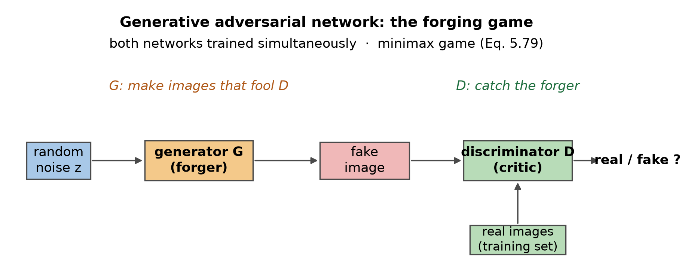

开场 · 判别式与生成式
让机器自己画图
判别式模型只判断，不建模数据怎么生成。
生成模型能看假设、用缺失数据、给多个结果。
图形学把这类技术叫图像合成。
纹理、风格迁移、分形地形都是老例子。
依据：原书第 328 页
本集三步走
压缩再解压：自编码器
造假与鉴别：GAN
图变图：pix2pix 与 CycleGAN
正课第四十四集
01 / 9
实验一 · 自编码器
自编码器：压紧再还原
图像压成紧凑编码，再解码还原原图。
训练目标：解码输出对回输入图。
隐向量一一对应输入，空间不好采样。
戈什 2019 注入噪声；历史比前馈网络老。
依据：原书第 329 页

自编码器瓶颈示意：编码器→隐向量→解码器｜程序生成，未用教材或论文原图
正课第四十四集
02 / 9
变分自编码器
VAE：把点压成一片云
每个输入先生成均值与协方差。
由参数定分布，再从分布里采样。
正则项防止协方差缩成零矩阵。
采样让隐空间好探索，解码器不易过拟合。
依据：原书第 329–330 页
与自编码器的差别
点 → 云
确定性 → 概率性
软肋：分布不好还得另想办法
正课第四十四集
03 / 9
实验二 · VQ-VAE
VQ-VAE：把隐空间离散化
每个位置换成码本里最近的向量。
码本 K=512，隐变量 32×32×1。
能表示的图有 512 的 1024 次方，2775 位。
隐变量另训生成模型，PixelCNN 逐个采样。
依据：原书第 330–331 页；本集实验

码本量化示意：隐向量→最近码本向量→解码｜程序生成，未用教材或论文原图
正课第四十四集
04 / 9
实验三 · GAN 博弈
GAN：造假者与鉴别者
手写不出真假损失，就训练一个评论家。
式 5.79：真图取 log D，假图取 log(1−D)。
生成器压第二项，判别器抬高两项。
这里的对抗指博弈，不是对抗样本。
依据：原书第 331–332 页

GAN 博弈框图：随机噪声→生成器→假图→判别器→真/假｜程序生成，未用教材或论文原图
正课第四十四集
05 / 9
GAN 家族
卷积化与条件化
最初全连接网络只能画 32×32 小图。
DCGAN 用反卷积，能画任意尺寸。
LAPGAN 用拉普拉斯金字塔串对抗网络。
cGAN 喂类别向量；InfoGAN 加互信息项。
依据：原书第 332–333 页
两种控制
插值：隐空间有了旋钮
条件：指定画什么
解耦：形状与风格分开
正课第四十四集
06 / 9
图到图翻译
pix2pix 与 CycleGAN
pix2pix 把草图、语义图翻译成照片。
判别器逐块判真伪，反馈更细。
没有随机向量，用 dropout 注入噪声。
CycleGAN 要求来回映射一致，不用配对。
依据：原书第 333–334 页；GAN Zoo 2014–2018 中 500+ 篇
两条路线
配对：pix2pix
不配对：CycleGAN、DualGAN、DiscoGAN
BicycleGAN：控制输出模式
正课第四十四集
07 / 9
谱系与收束
二零一七年后的名号
Wasserstein、Progressive、StyleGAN、BigGAN。
UNIT、MUNIT、SPADE、GANSpace、VQGAN。
超分辨率、照片级合成、图到图、交互编辑。
金字塔按语义层级改图；交换自编码器分纹理。
依据：原书第 335 页
这条线的收束
画得真
画得可控
仍是活跃方向
正课第四十四集
08 / 9
收束 · 下一集
四件事与两道题
四件事：自编码器、VAE、VQ-VAE、GAN。
题一：512^(32×32×1)，2775 位。
题二：256 见方图、70 见方块，144 块。
5.6 是书单；下一集 5.7 实验课。
依据：原书第 336–337 页；本集实验
四句话
自编码器：压紧再还原
VAE：点变云
VQ-VAE：查码本
GAN：造假对鉴别
正课第四十四集
09 / 9